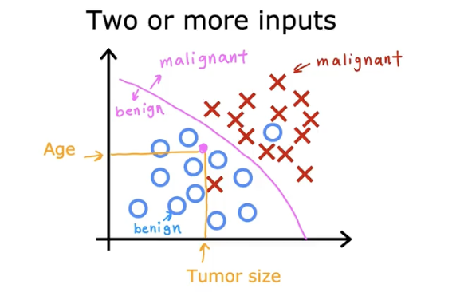
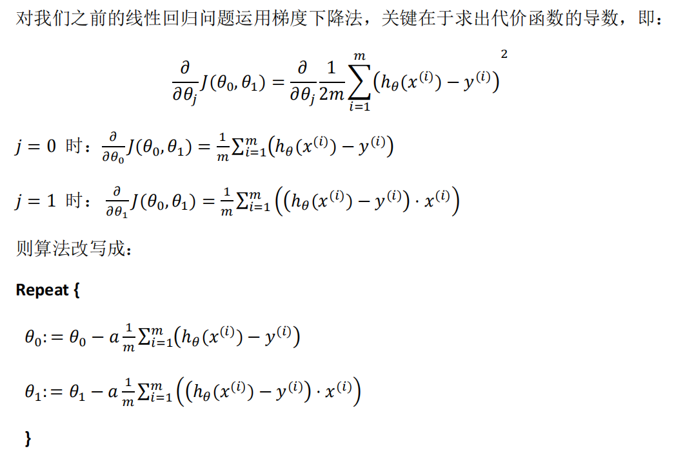

机器学习笔记
尽量写完，这个是Coursea的机器学习课程，会持续更新的。
概述
跳过
监督式机器学习与非监督式机器学习
监督式机器学习
通过输入一系列的x和y，形成一个模型，能够通过一个新的x来预测y的数值。
其中一种方式——回归，通过拟合一条直线或者曲线来预测y的值。
另一种方式——分类，通过拟合一个边界来预测其所属类别。 
线性回归
- 成本函数：评价拟合程度，数值应该尽可能小
$$
J(w, b) = \frac{\sum_{i = 1}^{m} (\hat{y}(x^{(i)}) - y^{(i)})^{2}}{2m}
$$
- 梯度下降：通过不断调整w和b，使得成本函数的值不断减小，最终达到最小值
$$
w = w - \alpha \frac{\partial J(w, b)}{\partial w}
$$
$$
b = b - \alpha \frac{\partial J(w, b)}{\partial b}
$$

向量化
将多个x和y的值合并成一个矩阵，通过矩阵运算来计算成本函数和梯度下降。在python，这个实现方式使用numpy库。能够极大程度地提高运算速度。由于是使用GPU进行矩阵运算
缩放
由于变量之间的大小水平有所差异，为了让数据更加可观，降低某些变量的灵敏度，需要将变量进行缩放。
有两种方式，一种是均值归一化，将变量的值减去均值，然后除以标准差。另一种是归一化，将变量的值除以最大值。
检查梯度下降是否收敛
两种方式：
- 绘图检查，看随着迭代次数增加，成本函数是否收敛到某个数值
- 检查梯度下降的步长是否足够小，如果步长足够小，说明梯度下降已经收敛
特征工程
通过特征工程，将原始数据转化为对模型更有用的数据，例如知道房子土地的长度和宽度，可以提取一个面积的特征。
多项式回归
就是将高次项视为一个单一的特征，例如将x1和x2的平方视为一个特征。然后根据普通的线性回归进行计算。
非监督式机器学习
通过输入一系列的x，通过聚类的方式，将相似的x归为一类，程序需要自己发现这些相似性。
逻辑回归
sigmoid函数，将y的值映射到0-1之间，用于分类问题。
$$
\hat{y} = \sigma(w^{T}x + b) = \frac{1}{1 + e^{-w^{T}x - b}}
$$
成本函数
$$
J(w, b) = -\frac{1}{m} \sum_{i = 1}^{m} {y^{(i)} \log(\hat{y}^{(i)}) + (1 - y^{(i)}) \log(1 - \hat{y}^{(i)})}
$$